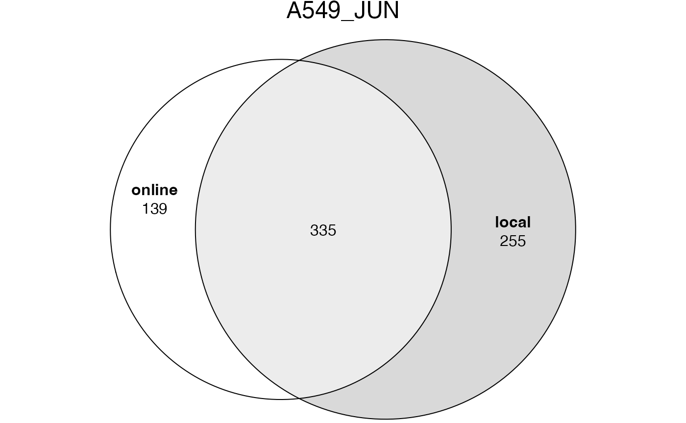
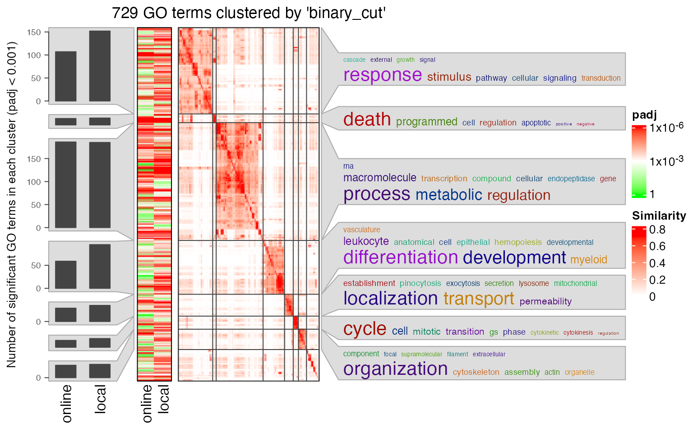
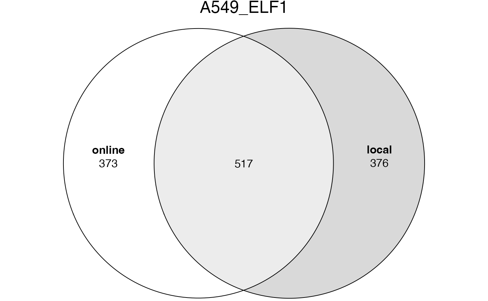
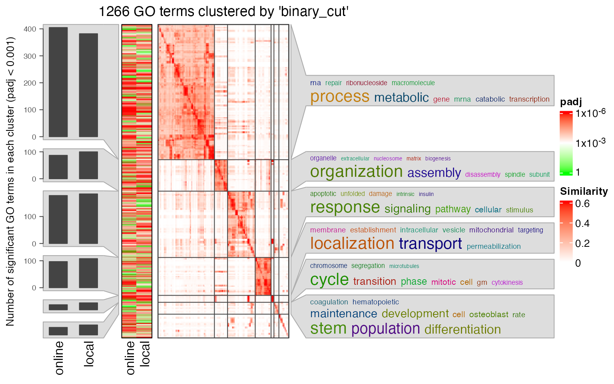
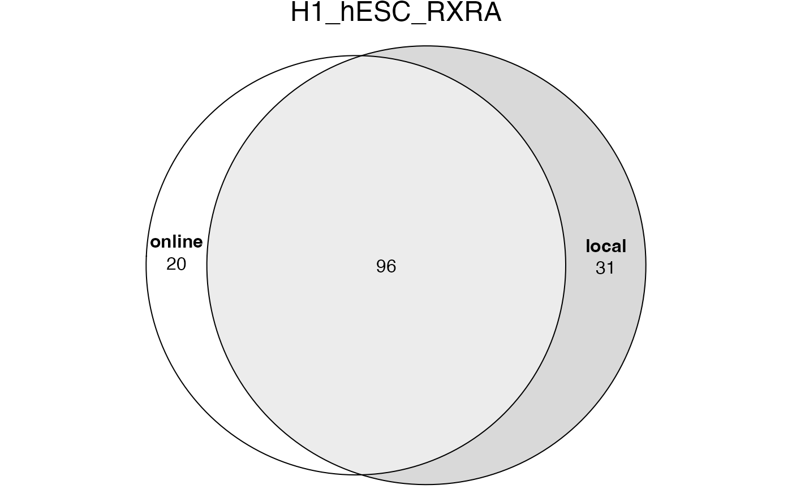
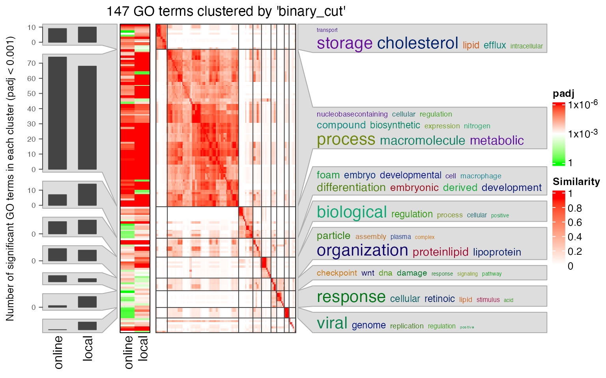
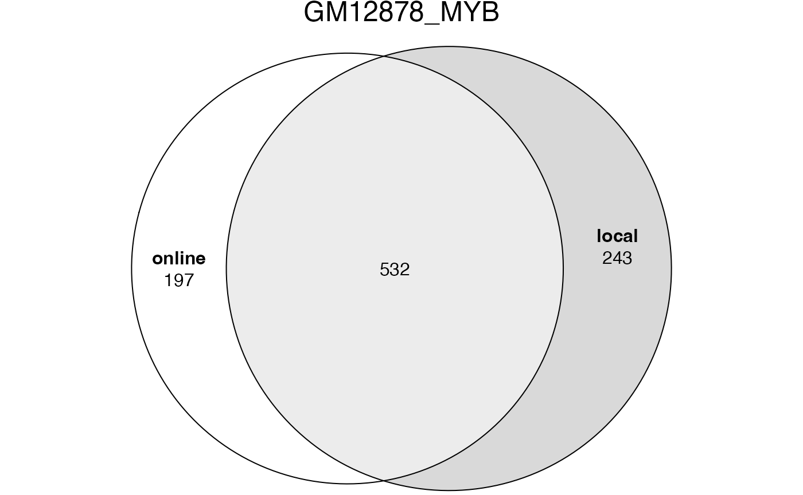
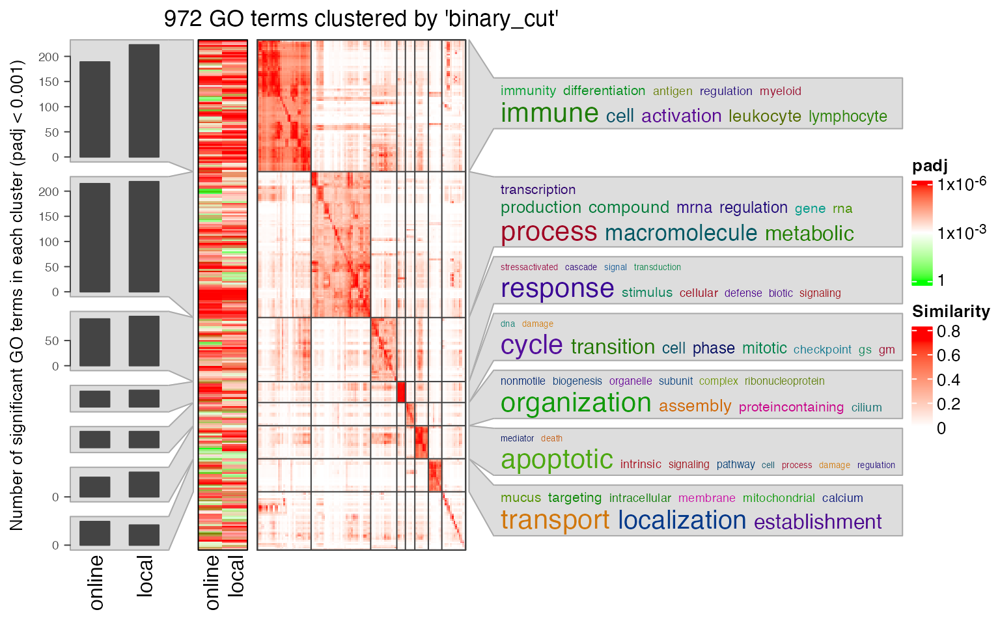

vignettes/suppl_compare_online_and_local.Rmd
suppl_compare_online_and_local.RmdIn this document, we will compare the enrichment results from online GREAT and local GREAT. The four datasets are all from UCSC table browser. Parameters are:
clade = Mammal
genome = Human
assembly = GRCh37/hg19
group = Regulation
track = ENCODE 3 TFBS
table: A549 JUN, A549 ELF1, H1-hESC RXRA, GM12878 MYBAnd in the “Retrieve and display data” section:
output format = BED - browser extensible dataThen click the button “get output”.
We first read the files into GRanges objects:
read_bed = function(f) {
df = read.table(f)
df = df[df[, 1] %in% paste0("chr", c(1:22, "X", "Y")), ]
GRanges(seqnames = df[, 1], ranges = IRanges(df[, 2] + 1, df[, 3]))
}
grl = list()
grl$A549_JUN = read_bed("data/tb_encTfChipPkENCFF708LCH_A549_JUN_hg19.bed")
grl$A549_ELF1 = read_bed("data/tb_encTfChipPkENCFF533NIV_A549_ELF1_hg19.bed")
grl$H1_hESC_RXRA = read_bed("data/tb_encTfChipPkENCFF369JAI_H1_hESC_RXRA_hg19.bed")
grl$GM12878_MYB = read_bed("data/tb_encTfChipPkENCFF215YWS_GM12878_MYB_hg19.bed")
sapply(grl, length)## A549_JUN A549_ELF1 H1_hESC_RXRA GM12878_MYB
## 1726 11577 2092 3748Apply both online and local GREAT analysis. Note online GREAT exclude gap regions, and in local GREAT, by default gap regions are removed as well.
gr = grl$A549_JUN
job = submitGreatJob(gr)
tbl = getEnrichmentTables(job)
tb1 = tbl[["GO Biological Process"]]
res = great(gr, "GO:BP", "hg19")
tb2 = getEnrichmentTable(res)tb1 and tb2 contain the full table of all GO terms under test. First we take the common GO terms in the two result tables.
## [1] 4578The significant GO terms from the two tables.
lt2 = list(online = tb1$ID[tb1$Binom_Adjp_BH < 0.001],
local = tb2$id[tb2$p_adjust < 0.001])
plot(euler(lt2), quantities = TRUE, main = "A549_JUN")
Next we compare the observed region hits and fold enrichment in the two results.
par(mfrow = c(1, 2))
plot(tb1$Binom_Observed_Region_Hits, tb2$observed_region_hits, pch = 16, col = "#00000010",
xlab = "online GREAT", ylab = "local GREAT", main = "Observed region hits")
plot(tb1$Binom_Fold_Enrichment, tb2$fold_enrichment, pch = 16, col = "#00000010",
xlab = "online GREAT", ylab = "local GREAT", main = "Fold enrichment")Next we compare the two significant GO term lists by clustering them into groups.
lt3 = list(online = data.frame(id = tb1$ID, p_adjust = tb1$Binom_Adjp_BH),
local = data.frame(id = tb2$id, p_adjust = tb2$p_adjust))
library(simplifyEnrichment)
se_opt$verbose = FALSE
simplifyGOFromMultipleLists(lt3, padj_cutoff = 0.001)
Apply both online and local GREAT analysis:
gr = grl$A549_ELF1
job = submitGreatJob(gr)
tbl = getEnrichmentTables(job)
tb1 = tbl[["GO Biological Process"]]
res = great(gr, "GO:BP", "hg19")
tb2 = getEnrichmentTable(res)tb1 and tb2 contain the full table of all GO terms under test. First we take the common GO terms in the two result tables.
## [1] 7552The significant GO terms from the two tables.
lt2 = list(online = tb1$ID[tb1$Binom_Adjp_BH < 0.001],
local = tb2$id[tb2$p_adjust < 0.001])
plot(euler(lt2), quantities = TRUE, main = "A549_ELF1")
Next we compare the observed region hits and fold enrichment in the two results.
par(mfrow = c(1, 2))
plot(tb1$Binom_Observed_Region_Hits, tb2$observed_region_hits, pch = 16, col = "#00000010",
xlab = "online GREAT", ylab = "local GREAT", main = "Observed region hits")
plot(tb1$Binom_Fold_Enrichment, tb2$fold_enrichment, pch = 16, col = "#00000010",
xlab = "online GREAT", ylab = "local GREAT", main = "Fold enrichment")Next we compare the two significant GO term lists by clustering them into groups.
lt3 = list(online = data.frame(id = tb1$ID, p_adjust = tb1$Binom_Adjp_BH),
local = data.frame(id = tb2$id, p_adjust = tb2$p_adjust))
library(simplifyEnrichment)
se_opt$verbose = FALSE
simplifyGOFromMultipleLists(lt3, padj_cutoff = 0.001)
Apply both online and local GREAT analysis:
gr = grl$H1_hESC_RXRA
job = submitGreatJob(gr)
tbl = getEnrichmentTables(job)
tb1 = tbl[["GO Biological Process"]]
res = great(gr, "GO:BP", "hg19")
tb2 = getEnrichmentTable(res)tb1 and tb2 contain the full table of all GO terms under test. First we take the common GO terms in the two result tables.
## [1] 4694The significant GO terms from the two tables.
lt2 = list(online = tb1$ID[tb1$Binom_Adjp_BH < 0.001],
local = tb2$id[tb2$p_adjust < 0.001])
plot(euler(lt2), quantities = TRUE, main = "H1_hESC_RXRA")
Next we compare the observed region hits and fold enrichment in the two results.
par(mfrow = c(1, 2))
plot(tb1$Binom_Observed_Region_Hits, tb2$observed_region_hits, pch = 16, col = "#00000010",
xlab = "online GREAT", ylab = "local GREAT", main = "Observed region hits")
plot(tb1$Binom_Fold_Enrichment, tb2$fold_enrichment, pch = 16, col = "#00000010",
xlab = "online GREAT", ylab = "local GREAT", main = "Fold enrichment")Next we compare the two significant GO term lists by clustering them into groups.
lt3 = list(online = data.frame(id = tb1$ID, p_adjust = tb1$Binom_Adjp_BH),
local = data.frame(id = tb2$id, p_adjust = tb2$p_adjust))
library(simplifyEnrichment)
se_opt$verbose = FALSE
simplifyGOFromMultipleLists(lt3, padj_cutoff = 0.001)
Apply both online and local GREAT analysis:
gr = grl$GM12878_MYB
job = submitGreatJob(gr)
tbl = getEnrichmentTables(job)
tb1 = tbl[["GO Biological Process"]]
res = great(gr, "GO:BP", "hg19")
tb2 = getEnrichmentTable(res)tb1 and tb2 contain the full table of all GO terms under test. First we take the common GO terms in the two result tables.
## [1] 5775The significant GO terms from the two tables.
lt2 = list(online = tb1$ID[tb1$Binom_Adjp_BH < 0.001],
local = tb2$id[tb2$p_adjust < 0.001])
plot(euler(lt2), quantities = TRUE, main = "GM12878_MYB")
Next we compare the observed region hits and fold enrichment in the two results.
par(mfrow = c(1, 2))
plot(tb1$Binom_Observed_Region_Hits, tb2$observed_region_hits, pch = 16, col = "#00000010",
xlab = "online GREAT", ylab = "local GREAT", main = "Observed region hits")
plot(tb1$Binom_Fold_Enrichment, tb2$fold_enrichment, pch = 16, col = "#00000010",
xlab = "online GREAT", ylab = "local GREAT", main = "Fold enrichment")Next we compare the two significant GO term lists by clustering them into groups.
lt3 = list(online = data.frame(id = tb1$ID, p_adjust = tb1$Binom_Adjp_BH),
local = data.frame(id = tb2$id, p_adjust = tb2$p_adjust))
library(simplifyEnrichment)
se_opt$verbose = FALSE
simplifyGOFromMultipleLists(lt3, padj_cutoff = 0.001)
## R version 4.3.1 (2023-06-16)
## Platform: x86_64-apple-darwin20 (64-bit)
## Running under: macOS Ventura 13.2.1
##
## Matrix products: default
## BLAS: /Library/Frameworks/R.framework/Versions/4.3-x86_64/Resources/lib/libRblas.0.dylib
## LAPACK: /Library/Frameworks/R.framework/Versions/4.3-x86_64/Resources/lib/libRlapack.dylib; LAPACK version 3.11.0
##
## locale:
## [1] C/UTF-8/C/C/C/C
##
## time zone: Europe/Berlin
## tzcode source: internal
##
## attached base packages:
## [1] grid stats4 stats graphics grDevices utils datasets
## [8] methods base
##
## other attached packages:
## [1] simplifyEnrichment_1.11.1 eulerr_7.0.0
## [3] rGREAT_2.5.4 GenomicRanges_1.52.1
## [5] GenomeInfoDb_1.36.4 IRanges_2.36.0
## [7] S4Vectors_0.40.2 BiocGenerics_0.48.1
## [9] knitr_1.44
##
## loaded via a namespace (and not attached):
## [1] RColorBrewer_1.1-3
## [2] jsonlite_1.8.8
## [3] shape_1.4.6
## [4] magrittr_2.0.3
## [5] magick_2.8.0
## [6] GenomicFeatures_1.52.2
## [7] rmarkdown_2.25
## [8] GlobalOptions_0.1.2
## [9] fs_1.6.3
## [10] BiocIO_1.10.0
## [11] zlibbioc_1.46.0
## [12] ragg_1.2.6
## [13] vctrs_0.6.4
## [14] Cairo_1.6-2
## [15] memoise_2.0.1
## [16] Rsamtools_2.16.0
## [17] RCurl_1.98-1.12
## [18] htmltools_0.5.7
## [19] S4Arrays_1.0.6
## [20] TxDb.Hsapiens.UCSC.hg19.knownGene_3.2.2
## [21] progress_1.2.2
## [22] curl_5.1.0
## [23] sass_0.4.8
## [24] bslib_0.6.1
## [25] htmlwidgets_1.6.2
## [26] desc_1.4.2
## [27] cachem_1.0.8
## [28] commonmark_1.9.0
## [29] GenomicAlignments_1.36.0
## [30] mime_0.12
## [31] lifecycle_1.0.4
## [32] iterators_1.0.14
## [33] pkgconfig_2.0.3
## [34] Matrix_1.6-1.1
## [35] R6_2.5.1
## [36] fastmap_1.1.1
## [37] GenomeInfoDbData_1.2.10
## [38] MatrixGenerics_1.12.3
## [39] shiny_1.8.0
## [40] clue_0.3-65
## [41] digest_0.6.33
## [42] colorspace_2.1-0
## [43] AnnotationDbi_1.62.2
## [44] rprojroot_2.0.3
## [45] textshaping_0.3.7
## [46] RSQLite_2.3.1
## [47] org.Hs.eg.db_3.17.0
## [48] filelock_1.0.2
## [49] fansi_1.0.5
## [50] httr_1.4.7
## [51] polyclip_1.10-6
## [52] abind_1.4-5
## [53] compiler_4.3.1
## [54] bit64_4.0.5
## [55] doParallel_1.0.17
## [56] BiocParallel_1.34.2
## [57] DBI_1.1.3
## [58] biomaRt_2.56.1
## [59] rappdirs_0.3.3
## [60] proxyC_0.3.3
## [61] DelayedArray_0.26.7
## [62] rjson_0.2.21
## [63] tools_4.3.1
## [64] httpuv_1.6.13
## [65] glue_1.6.2
## [66] restfulr_0.0.15
## [67] GOSemSim_2.26.1
## [68] promises_1.2.1
## [69] gridtext_0.1.5
## [70] polylabelr_0.2.0
## [71] cluster_2.1.4
## [72] generics_0.1.3
## [73] hms_1.1.3
## [74] xml2_1.3.6
## [75] utf8_1.2.3
## [76] XVector_0.40.0
## [77] markdown_1.10
## [78] foreach_1.5.2
## [79] pillar_1.9.0
## [80] stringr_1.5.0
## [81] later_1.3.2
## [82] circlize_0.4.15
## [83] dplyr_1.1.3
## [84] BiocFileCache_2.8.0
## [85] lattice_0.21-9
## [86] rtracklayer_1.60.1
## [87] bit_4.0.5
## [88] tidyselect_1.2.0
## [89] GO.db_3.17.0
## [90] ComplexHeatmap_2.18.0
## [91] tm_0.7-11
## [92] Biostrings_2.68.1
## [93] NLP_0.2-1
## [94] SummarizedExperiment_1.30.2
## [95] xfun_0.40
## [96] Biobase_2.60.0
## [97] matrixStats_1.2.0
## [98] DT_0.30
## [99] stringi_1.7.12
## [100] yaml_2.3.7
## [101] TxDb.Hsapiens.UCSC.hg38.knownGene_3.17.0
## [102] evaluate_0.22
## [103] codetools_0.2-19
## [104] tibble_3.2.1
## [105] cli_3.6.2
## [106] RcppParallel_5.1.7
## [107] xtable_1.8-4
## [108] systemfonts_1.0.5
## [109] jquerylib_0.1.4
## [110] Rcpp_1.0.11
## [111] dbplyr_2.3.4
## [112] png_0.1-8
## [113] XML_3.99-0.14
## [114] parallel_4.3.1
## [115] ellipsis_0.3.2
## [116] pkgdown_2.0.7
## [117] blob_1.2.4
## [118] prettyunits_1.2.0
## [119] bitops_1.0-7
## [120] slam_0.1-50
## [121] purrr_1.0.2
## [122] crayon_1.5.2
## [123] GetoptLong_1.0.5
## [124] rlang_1.1.2
## [125] KEGGREST_1.40.1